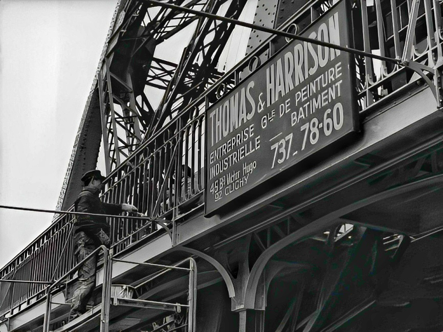
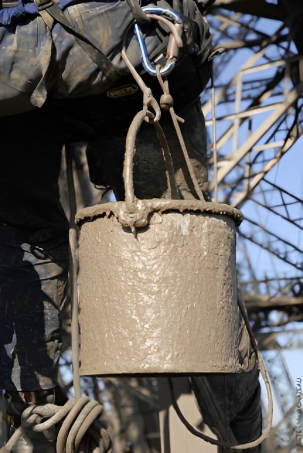
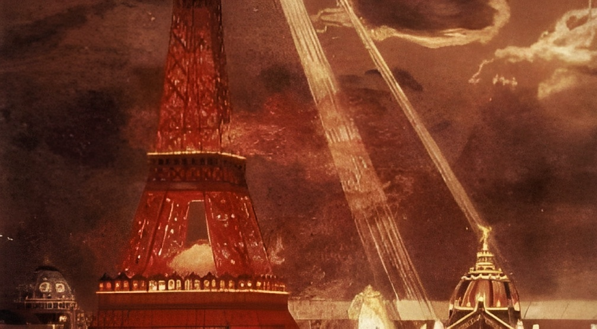
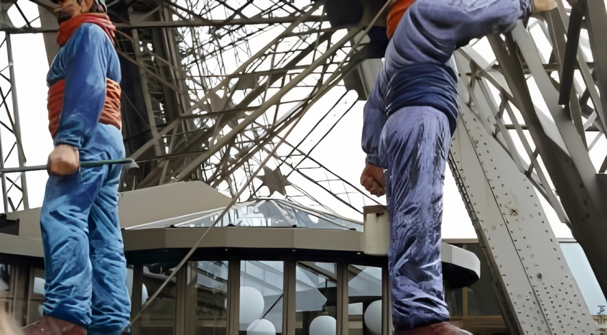
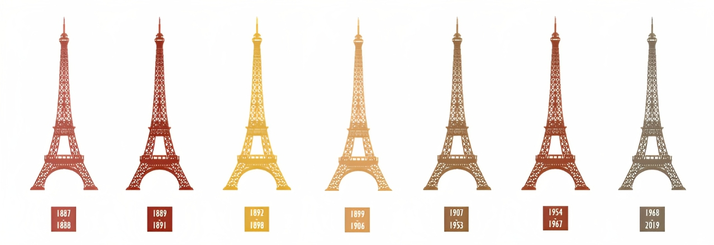

|  | |
Painting the Eiffel Tower |
|
| ☼ The repainting campaign is an important event in the life of the monument and takes on a truly mythical nature, as with everything linked to the Eiffel Tower. It represents the lasting quality of a work of art known all over the world, the colour of the monument that is symbolic of the Parisian cityscape, the technical prowess of painters unaffected by vertigo, and the importance of the methods implemented. | |
The Tower's protection |
|
• Constructed using puddle iron, the Tower is protected from oxidation by several coats of paint to ensure that it lives forever. • In 1900, in his book " The 300-Meter Tower ", Gustave Eiffel wrote, "We will most likely never realize the full importance of painting the Tower, that it is the essential element in the conservation of metal works and the more meticulous the paint job, the longer the Tower shall endure." • The Tower has been re-painted 19 times since its initial construction, an average of once every seven years. It has changed colour several times, passing from red-brown to yellow-ochre, then to chestnut brown and finally to the bronze of today, slightly shaded off towards the top to ensure that the colour is perceived to be the same all the way up as it stands against the Paris sky. |
 |
| The Eiffel Tower is built to last provided it is regularly repainted | |
| • The Eiffel Tower gets a complete repaint every 7 years. This rhythm was recommended by Gustave Eiffel himself. | |
An enormous amount of work to ensure the Tower’s longevity ‣ The Eiffel Tower is built using puddle iron, a material with a practically eternal lifespan if it is just regularly repainted! Indeed, there are various factors that can threaten this metal such as rust, the unavoidable pollution in a city, and bird droppings. |
 |
Traditional methods to paint the Tower ‣ Painters strip, clean, apply rust-proofing and the final coat of paint to the whole 300 metres. ‣ It should be mentioned that even today the painters still work using traditional methods dating back to Gustave Eiffel’s day – the painting of the Eiffel Tower is done mostly by hand! |
 |
|  | |